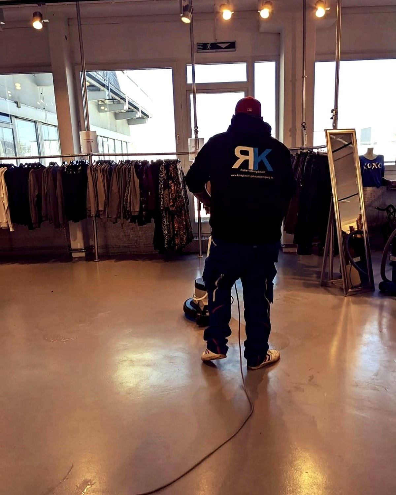

Ihr Büro. Sauber, bevor Sie morgens kommen.
Büro-, Praxis- und Gewerbereinigung in Neufahrn, Freising und im Münchner Norden – mit Schlüsselservice und dem Inhaber als direktem Ansprechpartner.

Robert KönigbauerInhaber · Ihr Ansprechpartner
LeistungenWas wir für Sie reinigen
Büros & Bürokomplexe
Unterhaltsreinigung täglich oder mehrmals pro Woche – außerhalb Ihrer Arbeitszeiten.
Schlüsselobjekte
Wir reinigen eigenständig, wenn niemand da ist – mit dokumentierter Schlüsselübergabe.
Praxen, Kanzleien, Agenturen
Arztpraxen, Steuerbüros, Versicherungsagenturen – hygienisch und diskret.
Treppenhäuser & Sonderreinigung
Für Hausverwaltungen, dazu Glas-, Grund- und Bauendreinigung.
Ihr VorteilWarum Königbauer?
24 hFestpreis nach Besichtigung
1Ansprechpartner – der Inhaber
festGleiche Reinigungskräfte
0 €Besichtigung & Beratung
Kostenlose Besichtigung vereinbaren
Ich komme persönlich vorbei – Sie erhalten innerhalb von 24 Stunden einen Festpreis.
0172 108 3808
Königbauer Gebäudereinigung · Georg-Stegschuster-Straße 18 · 85375 Neufahrn bei Freising
koenigbauer-gebaeudereinigung.de